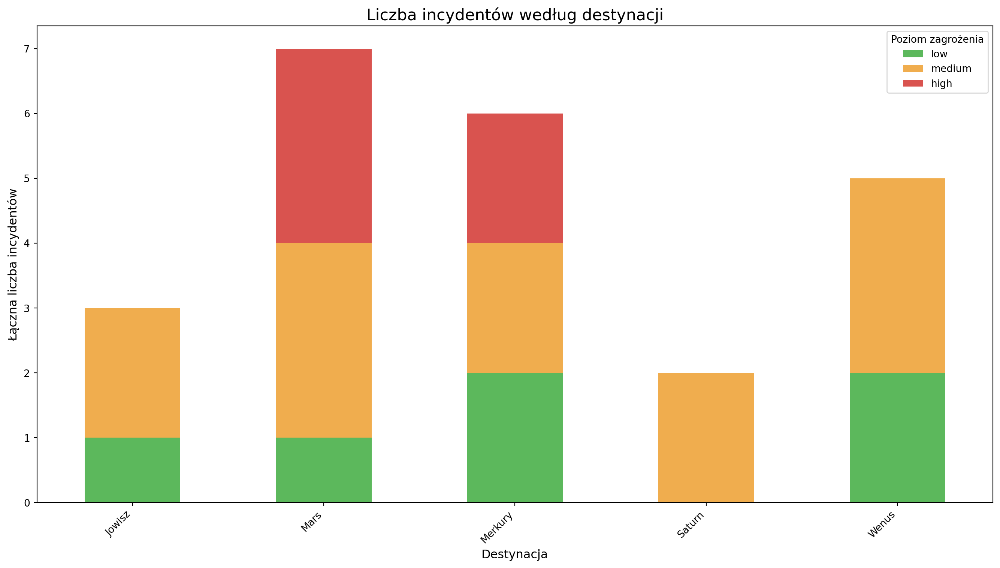
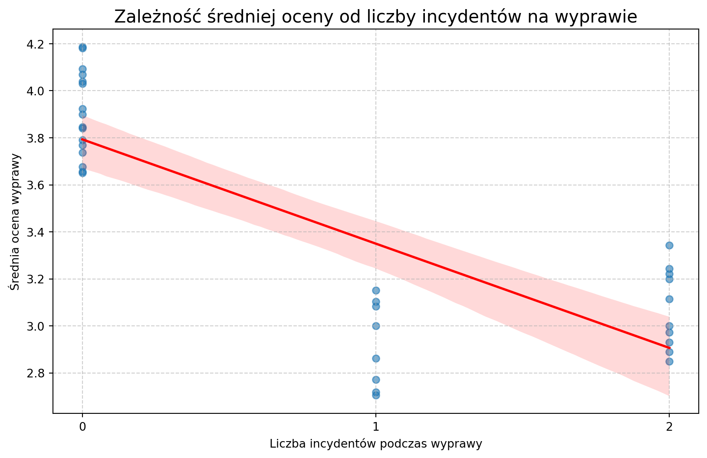
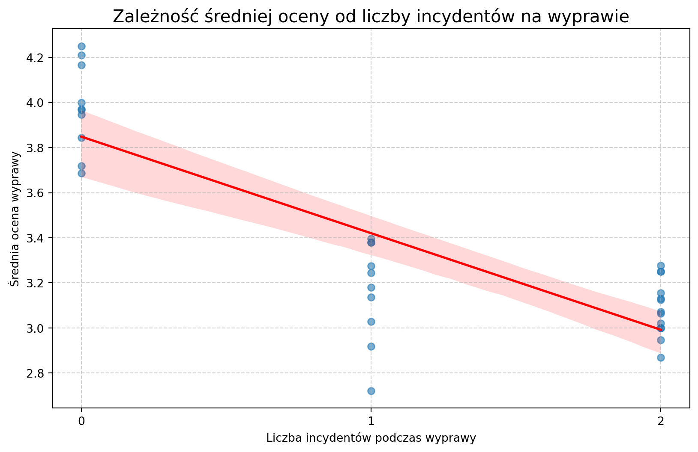
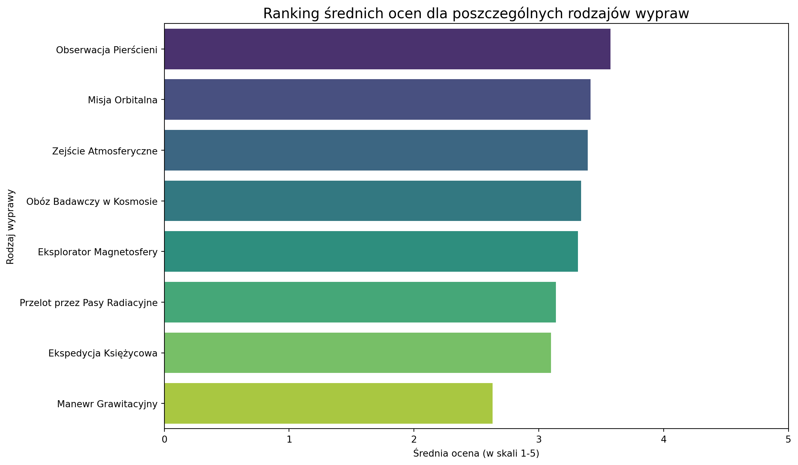

Pytanie: Znajdź najpopularniejsze rodzaje wypraw, porównaj koszta i zyski, czy są opłacalne?
Rozwiń kod
query ="""SELECT tt.name AS 'Rodzaj wyprawy', COUNT(t.trip_id) AS 'Liczba wypraw', COALESCE(SUM(ac.total_trip_cost), 0) AS 'Całkowite koszty', COALESCE(SUM(ar.total_trip_revenue), 0) AS 'Całkowite przychody', (COALESCE(SUM(ar.total_trip_revenue), 0) - COALESCE(SUM(ac.total_trip_cost), 0)) AS 'Zysk'FROM trip_types ttLEFT JOIN trips t ON tt.trip_type_id = t.trip_type_idLEFT JOIN (SELECT trip_id, SUM(cost_amount) AS total_trip_cost FROM costs GROUP BY trip_id) ac ON t.trip_id = ac.trip_idLEFT JOIN (SELECT trip_id, SUM(amount) AS total_trip_revenue FROM transactions WHERE status = 'Completed' GROUP BY trip_id) ar ON t.trip_id = ar.trip_idGROUP BY tt.nameORDER BY `Liczba wypraw` DESC;"""
Rozwiń kod
df_profitability = pd.read_sql(query, engine)print("Analiza popularności i opłacalności rodzajów wypraw:")print(df_profitability.to_string())
Analiza popularności i opłacalności rodzajów wypraw:
Rodzaj wyprawy Liczba wypraw Całkowite koszty Całkowite przychody Zysk
0 Obóz Badawczy w Kosmosie 10 1.509005e+08 7.615459e+09 7.464558e+09
1 Ekspedycja Księżycowa 9 6.887223e+07 3.927003e+09 3.858131e+09
2 Misja Orbitalna 8 4.333240e+07 2.350089e+09 2.306756e+09
3 Obserwacja Pierścieni 6 6.501498e+07 3.150152e+09 3.085137e+09
4 Przelot przez Pasy Radiacyjne 6 5.169616e+07 2.208579e+09 2.156883e+09
5 Zejście Atmosferyczne 5 3.415766e+07 1.979780e+09 1.945622e+09
6 Eksplorator Magnetosfery 4 2.504561e+07 9.369756e+08 9.119300e+08
7 Manewr Grawitacyjny 2 1.062919e+07 4.847184e+08 4.740892e+08
Rozwiń kod
print("\n\n--- Zautomatyzowana Analiza ---")print("\n## 🏆 TOP 3 najpopularniejsze rodzaje wypraw:\n")top_3_profitability = df_profitability.head(3)for index, row in top_3_profitability.iterrows():print(f"{index +1}. Rodzaj '{row['Rodzaj wyprawy']}': "f"{row['Liczba wypraw']} wypraw, "f"które przyniosły {row['Całkowite przychody']:.2f} przychodu." )print("\n## 💰 Analiza rentowności rodzajów wypraw:\n")unprofitable_types = df_profitability[df_profitability['Zysk'] <0]if unprofitable_types.empty:print("✅ Wszystkie rodzaje wypraw są opłacalne i nie przynoszą strat.")else:print("⚠️ UWAGA! Następujące rodzaje wypraw przynoszą straty:")for index, row in unprofitable_types.iterrows():print(f"- '{row['Rodzaj wyprawy']}': zanotowano stratę w wysokości {-row['Zysk']:.2f}" )print("\n----------------------------------")
--- Zautomatyzowana Analiza ---
## 🏆 TOP 3 najpopularniejsze rodzaje wypraw:
1. Rodzaj 'Obóz Badawczy w Kosmosie': 10 wypraw, które przyniosły 7615458763.02 przychodu.
2. Rodzaj 'Ekspedycja Księżycowa': 9 wypraw, które przyniosły 3927003027.84 przychodu.
3. Rodzaj 'Misja Orbitalna': 8 wypraw, które przyniosły 2350088858.30 przychodu.
## 💰 Analiza rentowności rodzajów wypraw:
✅ Wszystkie rodzaje wypraw są opłacalne i nie przynoszą strat.
----------------------------------
3.2 Problem drugi
Pytanie: Sporządź wykres liczby obsłużonych klientów w każdym miesiącu działalności firmy, czy firma rośnie, czy podupada?
Rozwiń kod
query_clients_per_month ="""SELECT DATE_FORMAT(t.departure_datetime, '%Y-%m') AS miesiac, COUNT(tp.client_id) AS liczba_klientowFROM trips tJOIN trip_participants tp ON t.trip_id = tp.trip_idGROUP BY miesiacORDER BY miesiac ASC;"""
x = np.arange(len(df_clients)) y = df_clients['liczba_klientow'] slope, intercept, r_value, p_value, std_err = stats.linregress(x, y)# Ustalamy próg "stagnacji", aby uniknąć klasyfikowania bardzo małych wahań# jako trendu. Np. jeśli wzrost/spadek jest mniejszy niż 0.5 klienta na miesiąc.stagnation_threshold =0.5if slope > stagnation_threshold: wniosek =f"Firma wykazuje wyraźny trend WZROSTOWY." szczegoly =f"Średnio, z każdym miesiącem liczba klientów rośnie o {slope:.2f}."elif slope <-stagnation_threshold: wniosek =f"Firma wykazuje wyraźny trend SPADKOWY." szczegoly =f"Średnio, z każdym miesiącem liczba klientów maleje o {-slope:.2f}."else: wniosek ="Firma wykazuje STAGNACJĘ." szczegoly =f"Brak wyraźnego trendu wzrostowego lub spadkowego (nachylenie linii trendu wynosi {slope:.2f})."print("--- Automatyczna Analiza Trendu ---")print(f"Współczynnik nachylenia linii trendu: {slope:.4f}")print(f"\nWniosek: {wniosek}")print(szczegoly)print("-----------------------------------")
--- Automatyczna Analiza Trendu ---
Współczynnik nachylenia linii trendu: 2.5498
Wniosek: Firma wykazuje wyraźny trend WZROSTOWY.
Średnio, z każdym miesiącem liczba klientów rośnie o 2.55.
-----------------------------------
3.3 Problem trzeci
Pytanie: Które destynacje są najbardziej ryzykowne?
Rozwiń kod
query_risky_destinations ="""SELECT destinations.name AS kierunek, COUNT(*) AS liczba_wypadkowFROM incidentsLEFT JOIN tripsON incidents.trip_id = trips.trip_idLEFT JOIN destinationsON trips.destination_id = destinations.destination_idGROUP BY kierunekORDER BY liczba_wypadkow DESC;"""
Rozwiń kod
query_risky_dest2 ="""SELECT d.name AS kierunek, COALESCE(tpd.total_trips, 0) AS liczba_wypraw, COALESCE(ipd.total_incidents, 0) AS liczba_incydentow, (COALESCE(ipd.total_incidents, 0) * 100.0 / tpd.total_trips) AS wskaznik_ryzyka_procentFROM destinations dJOIN -- Pierwsze podzapytanie zdefiniowane bezpośrednio w FROM ( SELECT destination_id, COUNT(trip_id) AS total_trips FROM trips GROUP BY destination_id ) AS tpd ON d.destination_id = tpd.destination_idLEFT JOIN -- Drugie podzapytanie zdefiniowane bezpośrednio w FROM ( SELECT t.destination_id, COUNT(i.incident_id) AS total_incidents FROM incidents i JOIN trips t ON i.trip_id = t.trip_id GROUP BY t.destination_id ) AS ipd ON d.destination_id = ipd.destination_idORDER BY wskaznik_ryzyka_procent DESC;"""
query_incidents_graph ="""SELECT d.name AS kierunek, i.severity, COUNT(i.incident_id) AS liczba_incydentowFROM incidents iJOIN trips t ON i.trip_id = t.trip_idJOIN destinations d ON t.destination_id = d.destination_idWHERE i.severity IN ('high', 'medium', 'low')GROUP BY d.name, i.severity"""
df_incidents_wide = df_incidents_long.pivot_table( index='kierunek', columns='severity', values='liczba_incydentow', fill_value=0)color_map = {'high': '#d9534f', 'medium': '#f0ad4e', 'low': '#5cb85c'}desired_order = ['low', 'medium', 'high']ordered_columns = [col for col in desired_order if col in df_incidents_wide.columns]df_incidents_wide = df_incidents_wide[ordered_columns]
Rozwiń kod
df_incidents_wide.plot( kind='bar', stacked=True, color=color_map, figsize=(14, 8))plt.title('Liczba incydentów według destynacji', fontsize=16)plt.xlabel('Destynacja', fontsize=12)plt.ylabel('Łączna liczba incydentów', fontsize=12)plt.xticks(rotation=45, ha='right')plt.legend(title='Poziom zagrożenia')plt.tight_layout()plt.show()

Rozwiń kod
query_weighted_risk ="""WITH trips_per_destination AS ( SELECT destination_id, COUNT(trip_id) AS total_trips FROM trips GROUP BY destination_id),weighted_incidents AS ( SELECT t.destination_id, SUM( CASE WHEN i.severity = 'High' THEN 10 WHEN i.severity = 'Medium' THEN 3 WHEN i.severity = 'Low' THEN 1 ELSE 0 END ) AS risk_score FROM incidents i JOIN trips t ON i.trip_id = t.trip_id GROUP BY t.destination_id)SELECT d.name AS Kierunek, COALESCE(tpd.total_trips, 0) AS Liczba_wypraw, COALESCE(wi.risk_score, 0) AS Suma_punktow_ryzyka, COALESCE(wi.risk_score / tpd.total_trips, 0) AS Wazony_wspolczynnik_ryzykaFROM destinations dLEFT JOIN trips_per_destination tpd ON d.destination_id = tpd.destination_idLEFT JOIN weighted_incidents wi ON d.destination_id = wi.destination_idWHERE tpd.total_trips > 0ORDER BY Wazony_wspolczynnik_ryzyka DESC;"""
Rozwiń kod
df_risk = pd.read_sql(query_weighted_risk, engine)print("--- Ranking Ryzyka Destynacji (ważony) ---")print(df_risk.to_string())# Automatyczny wniosekprint("\n--- Wnioski ---")most_risky = df_risk.iloc[0]print(f"Najbardziej ryzykowną destynacją według ważonego wskaźnika jest '{most_risky['Kierunek']}' "f"z wynikiem {most_risky['Wazony_wspolczynnik_ryzyka']:.2f} pkt na wyprawę.")
--- Ranking Ryzyka Destynacji (ważony) ---
Kierunek Liczba_wypraw Suma_punktow_ryzyka Wazony_wspolczynnik_ryzyka
0 Merkury 9 62.0 6.8889
1 Wenus 7 31.0 4.4286
2 Jowisz 16 66.0 4.1250
3 Mars 11 32.0 2.9091
4 Saturn 7 15.0 2.1429
--- Wnioski ---
Najbardziej ryzykowną destynacją według ważonego wskaźnika jest 'Merkury' z wynikiem 6.89 pkt na wyprawę.
Wadliwość statków
Rozwiń kod
query_spacecraft_incidents ="""SELECT spacecraft.name AS nazwa_statku, COUNT(*) AS liczba_usterekFROM incidentsLEFT JOIN tripsON incidents.trip_id = trips.trip_idLEFT JOIN spacecraftON trips.spacecraft_id = spacecraft.spacecraft_idWHERE incidents.category = 'equipment'GROUP BY spacecraft.nameORDER BY liczba_usterek desc"""
query_failure_rate ="""WITH trips_per_spacecraft AS ( SELECT spacecraft_id, COUNT(trip_id) AS total_trips FROM trips GROUP BY spacecraft_id),equipment_failures AS ( SELECT t.spacecraft_id, COUNT(i.incident_id) AS total_failures FROM incidents i JOIN trips t ON i.trip_id = t.trip_id WHERE i.category = 'equipment' GROUP BY t.spacecraft_id)SELECT s.name AS nazwa_statku, COALESCE(tps.total_trips, 0) AS liczba_wypraw, COALESCE(ef.total_failures, 0) AS liczba_usterek, CASE WHEN tps.total_trips > 0 THEN COALESCE(ef.total_failures, 0) / CAST(tps.total_trips AS FLOAT) ELSE 0 END AS usterki_na_wypraweFROM spacecraft sLEFT JOIN trips_per_spacecraft tps ON s.spacecraft_id = tps.spacecraft_idLEFT JOIN equipment_failures ef ON s.spacecraft_id = ef.spacecraft_idORDER BY usterki_na_wyprawe DESC;"""
print("--- Ranking Niezawodności Statków (Usterki na Wyprawę) ---")print(df_failure_rate.to_string())plt.figure(figsize=(12, 6))sns.barplot(data=df_failure_rate, x='usterki_na_wyprawe', y='nazwa_statku', hue="nazwa_statku", palette='Reds_r')plt.title('Wskaźnik Usterek Sprzętowych na Wyprawę')plt.xlabel('Średnia liczba usterek na jedną wyprawę')plt.ylabel('Statek kosmiczny')plt.tight_layout()plt.show()
# --- Automatyczne Wnioski z Rankingu Niezawodności ---print("\n--- 🤖 Automatyczne Wnioski z Rankingu Niezawodności ---")most_failure_prone = df_failure_rate.iloc[0]active_ships = df_failure_rate[df_failure_rate['liczba_wypraw'] >0]ifnot active_ships.empty: most_reliable = active_ships.iloc[-1]print("\n\n🔧 Najbardziej podatny na usterki jest statek:")print(f" -> Nazwa: '{most_failure_prone['nazwa_statku']}'")print(f" -> Wskaźnik: {most_failure_prone['usterki_na_wyprawe']:.3f} usterek na każdą wyprawę.")print(f" (Na podstawie {int(most_failure_prone['liczba_usterek'])} usterek w ciągu {int(most_failure_prone['liczba_wypraw'])} wypraw).")print("\n🏆 Najbardziej niezawodnym statkiem jest:")print(f" -> Nazwa: '{most_reliable['nazwa_statku']}'")print(f" -> Wskaźnik: {most_reliable['usterki_na_wyprawe']:.3f} usterek na każdą wyprawę.")if most_reliable['usterki_na_wyprawe'] ==0:print(f" (Statek odbył {int(most_reliable['liczba_wypraw'])} wypraw bez odnotowanej usterki sprzętowej - doskonały wynik!)")else:print(f" (Na podstawie {int(most_reliable['liczba_usterek'])} usterek w ciągu {int(most_reliable['liczba_wypraw'])} wypraw).")
--- 🤖 Automatyczne Wnioski z Rankingu Niezawodności ---
🔧 Najbardziej podatny na usterki jest statek:
-> Nazwa: 'Titan-X'
-> Wskaźnik: 2.000 usterek na każdą wyprawę.
(Na podstawie 2 usterek w ciągu 1 wypraw).
🏆 Najbardziej niezawodnym statkiem jest:
-> Nazwa: 'Hyperion-VX'
-> Wskaźnik: 0.000 usterek na każdą wyprawę.
(Statek odbył 1 wypraw bez odnotowanej usterki sprzętowej - doskonały wynik!)
3.4 Problem czwarty
Pytanie: Czy występowanie incydentów ma wpływ na ocenę wyprawy?
Rozwiń kod
query_feedback_incidents ="""SELECT AVG(feedback.rating) AS srednia_ocena, t.liczba_wypadkowFROM feedbackLEFT JOIN tripsON feedback.trip_id = trips.trip_idLEFT JOIN (SELECT incidents.trip_id, COUNT(incidents.incident_id) AS liczba_wypadkow FROM incidents GROUP BY trip_id) tON t.trip_id = trips.trip_idGROUP BY feedback.trip_id"""
Rozwiń kod
query_correlation ="""WITH avg_ratings AS ( SELECT trip_id, AVG(rating) AS avg_rating FROM feedback GROUP BY trip_id),incident_counts AS ( SELECT trip_id, COUNT(incident_id) AS incident_count FROM incidents GROUP BY trip_id)SELECT t.trip_id, ar.avg_rating AS srednia_ocena, COALESCE(ic.incident_count, 0) AS liczba_incydentowFROM trips tJOIN avg_ratings ar ON t.trip_id = ar.trip_idLEFT JOIN incident_counts ic ON t.trip_id = ic.trip_id;"""
correlation_coeff = df_correlation['srednia_ocena'].corr(df_correlation['liczba_incydentow'])print(f"--- 🤖 Analiza korelacji: Ocena vs. Incydenty ---")print(f"Obliczony współczynnik korelacji: {correlation_coeff:.3f}")if correlation_coeff <-0.3:print("Wniosek: Istnieje zauważalna korelacja ujemna. Wzrost liczby incydentów wiąże się ze spadkiem ocen.")elif correlation_coeff >0.3:print("Wniosek: Istnieje zauważalna korelacja dodatnia (wynik nieoczekiwany).")else:print("Wniosek: Brak silnej korelacji. Liczba incydentów nie wydaje się mieć dużego wpływu na ocenę.")print("-------------------------------------------------")plt.figure(figsize=(10, 6))sns.regplot(data=df_correlation, x='liczba_incydentow', y='srednia_ocena', line_kws={"color": "red", "lw": 2}, scatter_kws={"alpha": 0.6})plt.title('Zależność średniej oceny od liczby incydentów na wyprawie', fontsize=15)plt.xlabel('Liczba incydentów podczas wyprawy')plt.ylabel('Średnia ocena wyprawy')max_incidents =int(df_correlation['liczba_incydentow'].max())plt.xticks(range(max_incidents +1))plt.grid(True, linestyle='--', alpha=0.6)plt.show()
--- 🤖 Analiza korelacji: Ocena vs. Incydenty ---
Obliczony współczynnik korelacji: -0.772
Wniosek: Istnieje zauważalna korelacja ujemna. Wzrost liczby incydentów wiąże się ze spadkiem ocen.
-------------------------------------------------

3.5 Problem piąty
Pytanie: Jakie destynacje i rodzaje wycieczek otrzymują najlepsze oceny?
Rozwiń kod
query_dest_ratings ="""SELECT d.name AS kierunek, AVG(f.rating) AS srednia_ocena, COUNT(f.rating) AS liczba_ocenFROM feedback fJOIN trips t ON f.trip_id = t.trip_idJOIN destinations d ON t.destination_id = d.destination_idWHERE f.rating IS NOT NULLGROUP BY d.nameHAVING COUNT(f.rating) > 2ORDER BY srednia_ocena DESC;"""
print("\n--- ⭐ Ranking Ocen Destynacji ---")best_dest = df_dest_ratings.iloc[0]worst_dest = df_dest_ratings.iloc[-1]print(f"\n🥇 Najwyżej oceniana destynacja: '{best_dest['kierunek']}'")print(f" -> Średnia ocena: {best_dest['srednia_ocena']:.2f} na podstawie {int(best_dest['liczba_ocen'])} opinii.")print(f"\n📉 Najniżej oceniana destynacja: '{worst_dest['kierunek']}'")print(f" -> Średnia ocena: {worst_dest['srednia_ocena']:.2f} na podstawie {int(worst_dest['liczba_ocen'])} opinii.")
--- ⭐ Ranking Ocen Destynacji ---
🥇 Najwyżej oceniana destynacja: 'Jowisz'
-> Średnia ocena: 3.45 na podstawie 363 opinii.
📉 Najniżej oceniana destynacja: 'Merkury'
-> Średnia ocena: 3.19 na podstawie 270 opinii.
Rozwiń kod
plt.figure(figsize=(12, 7))sns.barplot(data=df_dest_ratings, x='srednia_ocena', y='kierunek', palette='coolwarm')plt.title('Ranking średnich ocen dla poszczególnych destynacji', fontsize=15)plt.xlabel('Średnia ocena (w skali 1-5)')plt.ylabel('Destynacja')plt.xlim(0, 5)plt.tight_layout()plt.show()
C:\Users\rafal\AppData\Local\Temp\ipykernel_36504\1199124194.py:2: FutureWarning:
Passing `palette` without assigning `hue` is deprecated and will be removed in v0.14.0. Assign the `y` variable to `hue` and set `legend=False` for the same effect.

Rozwiń kod
query_type_ratings ="""SELECT tt.name AS typ_wyprawy, AVG(f.rating) AS srednia_ocena, COUNT(f.rating) AS liczba_ocenFROM feedback fJOIN trips t ON f.trip_id = t.trip_idJOIN trip_types tt ON t.trip_type_id = tt.trip_type_idWHERE f.rating IS NOT NULLGROUP BY tt.nameHAVING COUNT(f.rating) > 2ORDER BY srednia_ocena DESC;"""
print("\n--- ⭐ Ranking Ocen Rodzajów Wypraw ---")best_type = df_type_ratings.iloc[0]worst_type = df_type_ratings.iloc[-1]print(f"\n🥇 Najwyżej oceniany typ wyprawy: '{best_type['typ_wyprawy']}'")print(f" -> Średnia ocena: {best_type['srednia_ocena']:.2f} na podstawie {int(best_type['liczba_ocen'])} opinii.")print(f"\n📉 Najniżej oceniany typ wyprawy: '{worst_type['typ_wyprawy']}'")print(f" -> Średnia ocena: {worst_type['srednia_ocena']:.2f} na podstawie {int(worst_type['liczba_ocen'])} opinii.")
--- ⭐ Ranking Ocen Rodzajów Wypraw ---
🥇 Najwyżej oceniany typ wyprawy: 'Przelot przez Pasy Radiacyjne'
-> Średnia ocena: 3.62 na podstawie 118 opinii.
📉 Najniżej oceniany typ wyprawy: 'Eksplorator Magnetosfery'
-> Średnia ocena: 2.96 na podstawie 69 opinii.
Rozwiń kod
plt.figure(figsize=(12, 7))sns.barplot(data=df_type_ratings, x='srednia_ocena', y='typ_wyprawy', palette='viridis')plt.title('Ranking średnich ocen dla poszczególnych rodzajów wypraw', fontsize=15)plt.xlabel('Średnia ocena (w skali 1-5)')plt.ylabel('Rodzaj wyprawy')plt.xlim(0, 5)plt.tight_layout()plt.show()
C:\Users\rafal\AppData\Local\Temp\ipykernel_36504\344212182.py:2: FutureWarning:
Passing `palette` without assigning `hue` is deprecated and will be removed in v0.14.0. Assign the `y` variable to `hue` and set `legend=False` for the same effect.

3.6 Problem szósty
Pytanie: Jaka jest struktura wieku naszych klientów?
Rozwiń kod
query_dob ="""SELECT date_of_birthFROM clientsWHERE date_of_birth IS NOT NULL;"""